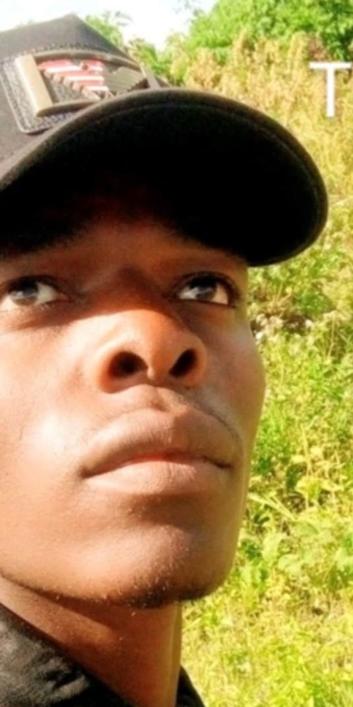

Agricultural Advisory System
🌐 change Language / Badilisha Lugha

Name: Taisoni Ambokile Mwaluswaswa ☎️📞0749458547☎ GIS and RS Expert 📧 taisonimwuluswaswa@gmail.com
📍 Use My Location
🎤
Full Name:
Gender:
Select Gender
🧑🏾 Male
🧕🏾 Female
Region:
Crop:
Tip: click thumbnail to choose crop.
Chart Type:
Line (monthly)
Bar
📊 Show Trend
💬 Show Advice
🌦️ Check Weather
📈 5-Day Forecast